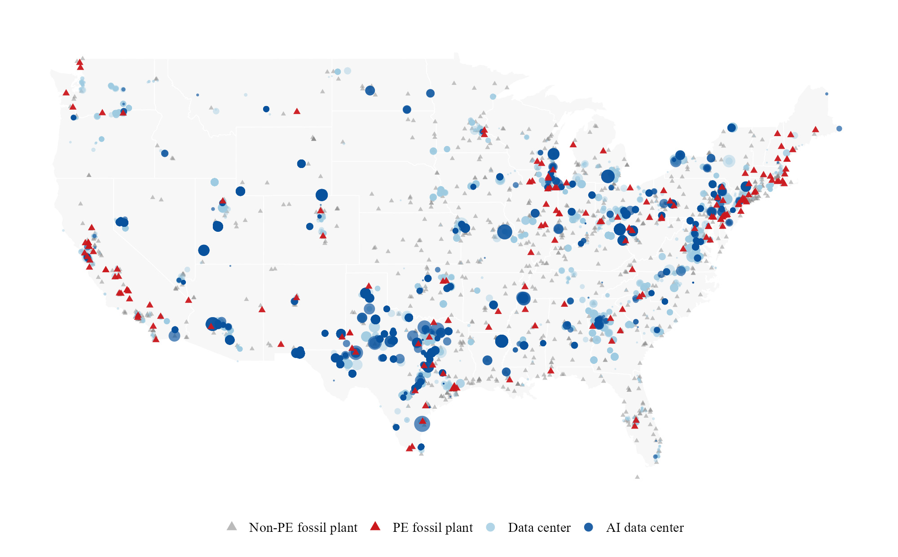
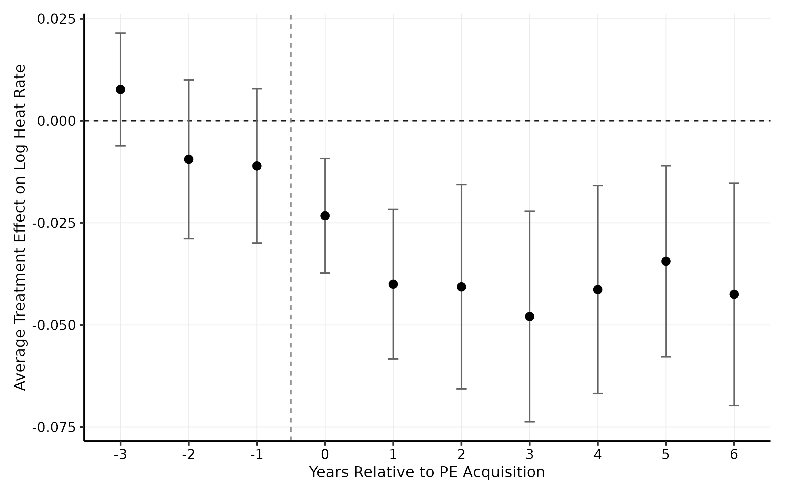
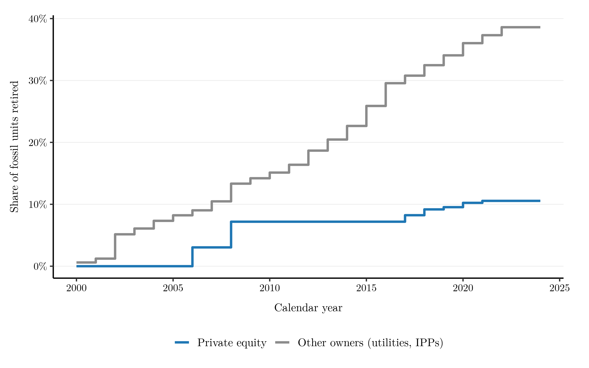
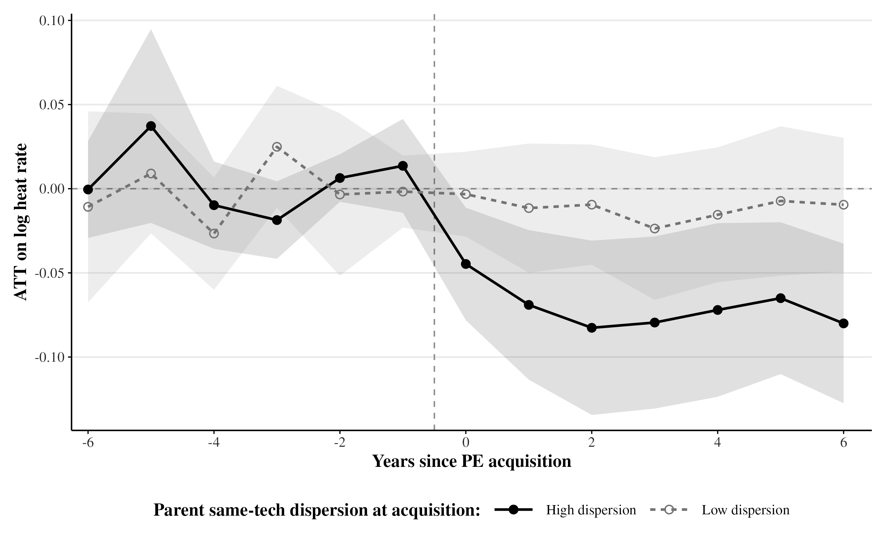
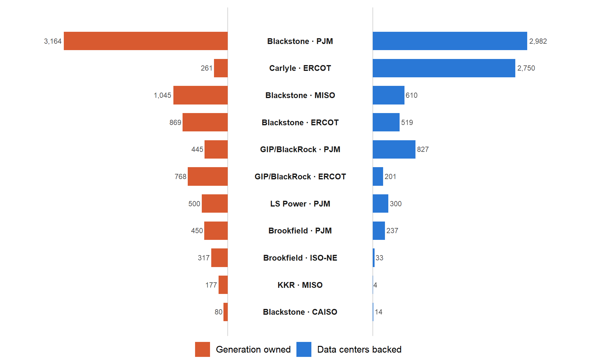
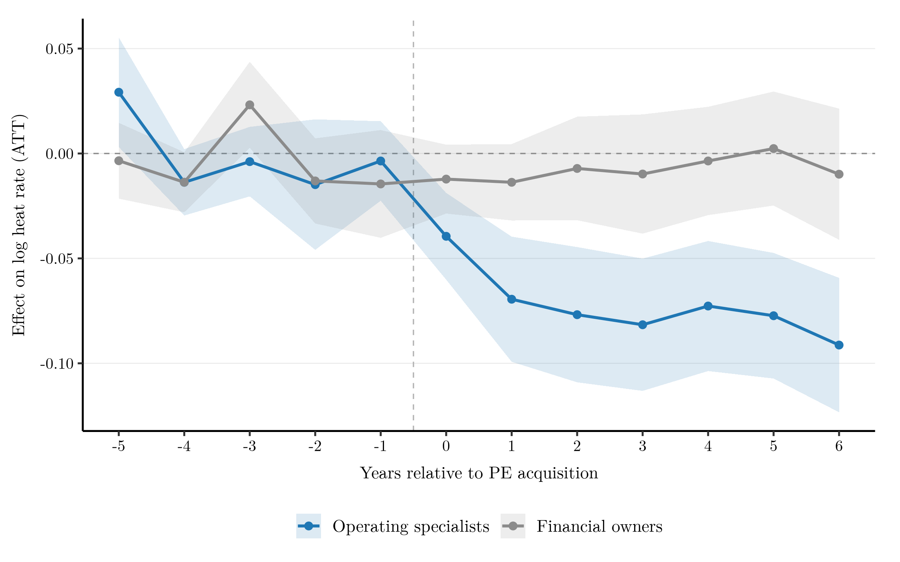
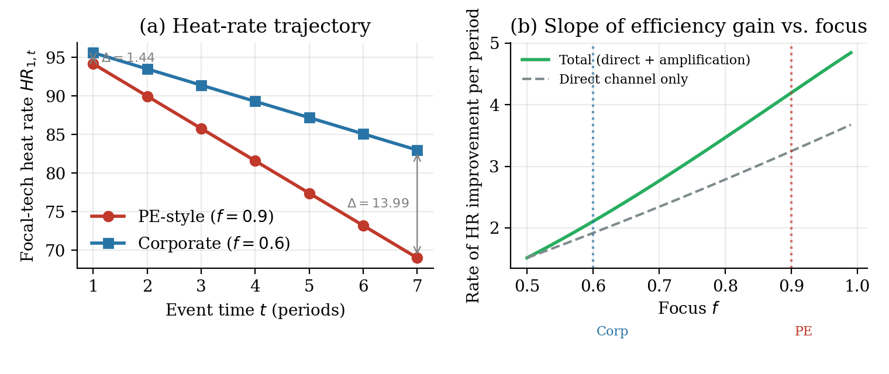
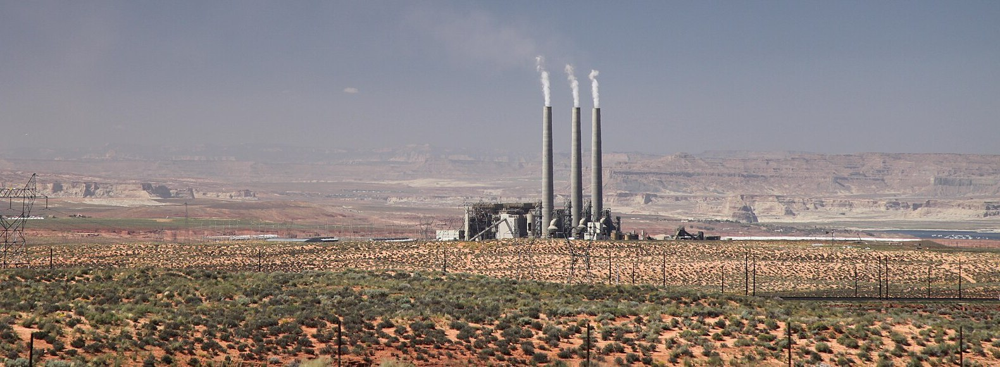

Job Market Paper
Why we should care
Data center demand is arriving faster than new generation can be built, so the fleet already on the grid is what meets it. Since the repeal of the Public Utility Holding Company Act (PUHCA) in 2005, private equity has been acquiring fossil generation assets at scale. Who owns them — and what ownership does to how they run — has become a first-order question for strategy, energy markets, and climate at the same time.

Research question
The canonical account gives private equity three levers: financial engineering, governance engineering, and operational engineering. The first two are well mapped. The third — “they improve operations” — usually enters as a residual. This paper opens that box with a specific mechanism: operating experience converts across technologically similar assets, so the portfolio’s composition determines whether know-how accumulated on one plant can be redeployed on the next.
The question originates in practice. Advising industrial companies at McKinsey, I regularly observed comparable assets performing differently under different owners; this paper examines that variation systematically.
Acquired units improve thermal efficiency by 2–5% with clean pre-trends, and their hazard of retirement falls by roughly three-quarters — ownership change alters both how an asset runs and how long it lasts.
Through convertibility: gains concentrate almost entirely among operationally focused specialists whose portfolios are technologically concentrated. Financially oriented owners holding similar assets show no comparable improvement.
Operating knowledge transfers within, but not across, technology classes — and it travels across geographically dispersed same-technology portfolios. The binding boundary is technological, not spatial.
Data
Every claim in the paper rests on the same spine: the physical unit. High frequency operations, transaction-level ownership, and facility-level digital demand join at the unit level, so productivity, ownership, and demand can be read off the same asset at the same moment — for a quarter century.
Hourly generation, heat input, and emissions for every covered fossil unit from EPA continuous emissions monitors — 5,182 units and 840,930 unit-months, 2000–2024 — extended with generator-level retirement records from EIA Form 860. Monitoring attaches to the physical unit, so the records follow each asset across ownership changes under one federal protocol.
Acquirer identities, ownership fractions, and transaction timing from S&P Capital IQ Pro, with partial stakes aggregated across direct and indirect holdings and cross-checked against press releases and regulatory filings — a month-by-month ownership history for every unit and every owner’s full portfolio.
Roughly 7,000 facilities from the Aterio inventory — location, estimated power capacity, development stage, and disclosed financial sponsors — corroborated against an independent county-level census built from CBRE reports and operator disclosures.
Precise coordinates for every generating unit and every data center support two geographies used throughout: the internal dispersion of each owner’s same-technology portfolio, and each unit’s proximity to present and announced data center capacity — complementing facility geographies documented in prior scholarship.
Marginal CO₂ emission rates across 27 subregions from EPA eGRID — 98% of the PE-owned sample matches directly — for the climate counterfactuals, and delivered fuel prices from the EIA Natural Gas Monthly for the fuel-cost calculations.
Semi-structured interviews with eleven practitioners — private equity operating partners, plant managers, utility executives, OEM service engineers, and independent performance consultants — conducted under Harvard IRB Protocol IRB25-1112; the record behind the operating levers and quotes below.
Research design
Staggered difference-in-differences (Callaway–Sant’Anna) on within-unit ownership transitions, not-yet-treated controls, clean pre-trends; the dispersion split adjudicates between knowledge transfer and agglomeration.
The outcome is physical: heat rate, fuel energy in per unit of electricity out — immune to accounting and reporting discretion. Treatment is a sustained majority PE stake at the unit-month, with any-presence and plurality definitions in robustness.
A supermodular model in which owner operating capability governs the complementarity between technology-specific experience and portfolio focus — tested with quasi-experimental designs, hazard models, and practitioner interviews.
Quantitative evidence
Finding 1
Within-unit estimates from staggered ownership transitions show heat rate — fuel burned per unit of electricity, a physical productivity measure reported to environmental monitors — improving 2–5% after acquisition, with clean pre-trends. The same ownership form cuts the hazard of retirement by roughly three-quarters. Efficiency and longevity are twin outcomes of one capability, and they cut in opposite climate directions: each megawatt-hour gets cleaner while the asset’s life gets longer, so the net climate effect depends on the pace of the energy transition.


Finding 2
If the improvements came from place-based spillovers — shared labor markets, clustered suppliers — they should concentrate in geographically compact portfolios. They do not. Acquisitions into geographically dispersed same-technology portfolios capture the gains, which isolates firm-internal knowledge transfer and rules out agglomeration as the driver. The enabling portfolio is deep rather than broad: scaled within a technology, not diversified across them.

Finding 3
The efficiency gains concentrate almost entirely among operationally focused specialist funds. Generalist funds appear to pursue a distinct value creation logic: linking the ownership records to a national data center inventory shows the same sponsors holding fossil generation and data center capacity inside the same balancing authorities — coordinating electricity supply and digital demand through cross ownership rather than running the plants better. The capital that owns the demand is not the capital that runs the supply best. This is vertical, cross-segment common ownership, documented descriptively as a lower bound.

Qualitative evidence
When all your plants are running the same [turbine model], your guys just get it after a while. They can hear when something’s off. We rotate our best operators between [sites in] Texas and Ohio, and they hit the ground running because it’s the same machine.
VP of Operations · PE-backed generation platform
Within eighteen months of closing the acquisition, we had standardized startup procedures across all nine of our combined-cycle plants. Same OEM, same turbine class — so one procedure works everywhere. Our average hot-start time dropped [significantly] across the fleet.
Operations executive · PE-backed generation platform
After fifteen years [on combined-cycle units], you develop a feel for the heat recovery steam generator — you know from the sound of the bypass dampers whether you’re leaving efficiency on the table.
Plant Manager · PE-owned combined-cycle facility
We tried moving one of our best gas turbine supervisors over to a coal unit that was struggling. Smart guy, great track record. But he was basically starting from scratch. Coal is a completely different animal.
Regional Operations Director · diversified utility
From semi-structured interviews with practitioners across PE-backed platforms, utilities, OEM service organizations, and advisory firms (Harvard University IRB Protocol IRB25-1112). Interviews were confidential and non-attributable; identifying details have been generalized. The first two quotes describe knowledge moving across distance within a technology class; the last describes it stopping at a technology boundary — together, the two sides of the dispersion result.
The interview record maps onto Nonaka’s (1994) knowledge-conversion framework. Focused ownership accelerates the three modes tied to unit-level efficiency; diversified ownership retains the advantage in cross-technology recombination — value that appears at the portfolio level, not in unit-level heat rates.
Focused: operating partners carry tacit knowledge across same-technology plants.
Diversified: managerial intuition only; tacit knowledge siloed by technology.
PE advantageFocused: one playbook covers the entire fleet; codification scales.
Diversified: codified knowledge is technology-specific; each technology needs its own procedures.
PE advantageFocused: operators absorb procedures in a familiar context; repetition builds deep intuition.
Diversified: cross-technology practices don’t stick; context switching dilutes internalization.
PE advantageFocused: within-technology benchmarking only; narrow recombination.
Diversified: cross-technology system optimization; diverse codified pools enable portfolio-level synthesis.
Utility advantageAdapted from Nonaka (1994), as in the paper’s interview appendix. Focused ownership accelerates socialization, externalization, and internalization — the three processes most directly linked to unit-level operational efficiency.
Mechanism
The mechanism makes a sharp prediction about who should fail to produce the gains. If the improvements came from leverage, monitoring, or incentive design, financially oriented owners would generate them too. They do not: efficiency effects for financial owners hover at zero throughout, while operating specialists’ effects deepen steadily after acquisition. The capability, not the capital structure, does the work.

On the ground, the gains come from a repertoire of well-known, attention-intensive adjustments — not proprietary technology or heavy capital spending. One performance consultant estimated that a typical heat-rate audit surfaces 2–4% of recoverable losses, nearly all from fixes like these:
What separates owners is not knowing these levers exist — everyone does. It is whether the organization allocates the sustained, technology-specific attention needed to find and hold marginal gains across a fleet. A portfolio of similar units makes performance differences immediately legible: a plant running the same turbine model as its sister units but posting a higher heat rate invites a question — what is different about this one? — that a heterogeneous fleet cannot ask as precisely.
Could it be something else?
Long-lived physical assets, discretionary operating practices, and active financial engineering make several rival readings plausible from the outset. The paper takes each seriously, and the verdicts are deliberately calibrated: “ruled out” only where the measurement makes the alternative impossible, more guarded where the evidence narrows the space without closing it.
No single alternative — and no plausible combination — reconciles flat pre-trends, within-unit gains in a balanced panel, persistence through six years, survival within fuel type, and a measurement technology immune to reporting discretion. The remaining channels read as complements to the knowledge-convertibility mechanism, not substitutes for it.
Conceptual
An acquisition does more than transfer cash-flow and control rights: it places an existing asset inside a different operating organization, with different capabilities, routines, accumulated experience, and neighboring assets. Productivity, then, may depend on the owner — and on the portfolio around it.
If those organizational complements affect productivity, then corporate scope has consequences inside the portfolio, not only at the level of firm value. Ownership becomes an allocation problem: which organization can make a given asset most productive?
That is a fundamental strategy question. Electricity generation is the unusually revealing setting in which it can be observed.
Modeling
To explain the heterogeneity, the paper develops a supermodular model in which the owner’s operating capability governs the complementarity between technology-specific experience and portfolio focus. Experience raises productivity most where the portfolio concentrates on technologies the owner knows; without operating capability, the complementarity is inert. The model turns the mechanism into predictions — gains that grow with the experience–focus interaction, concentrate among operating specialists, and stop at technology boundaries — each borne out in the evidence above.


Navajo Generating Station, Arizona — retired 2019 · photo: Daniel Schwen, CC BY 3.0The questions, answered
What are the productivity consequences of ownership change for physical assets?
Acquired units improve thermal efficiency by 2–5% with clean pre-trends, and their hazard of retirement falls by roughly three-quarters. Ownership change alters both how an asset runs and how long it lasts — twin outcomes that cut in opposite climate directions.
How does the composition of an owner’s portfolio connect firm-level strategy to the performance of the individual assets it holds?
Through convertibility. The gains concentrate almost entirely among operationally focused specialists whose portfolios are technologically concentrated: experience pays where the portfolio makes it transferable. Financially oriented owners holding similar assets show no comparable improvement.
What are the technological and geographic boundaries within which operating knowledge transfers across a portfolio?
Operating knowledge transfers within, but not across, technology classes — and it travels across geographically dispersed same-technology portfolios. The binding boundary is technological, not spatial.
Ownership changes don’t just reallocate industrial assets — they reshape the conditions under which industrial knowledge travels.
{kind=link}
{kind=link}